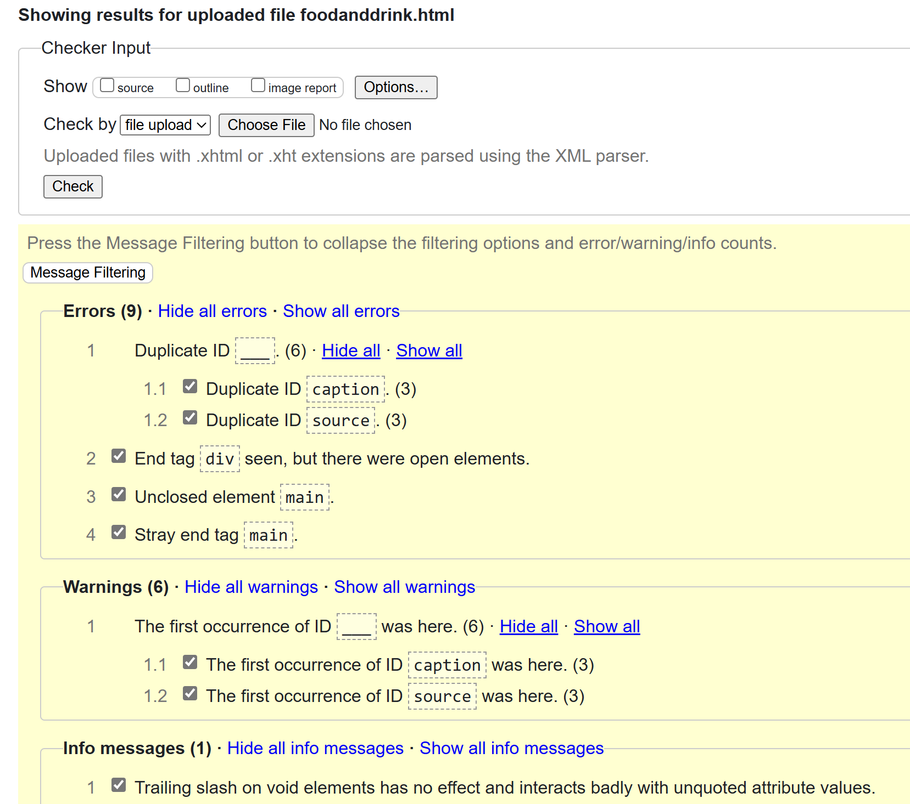
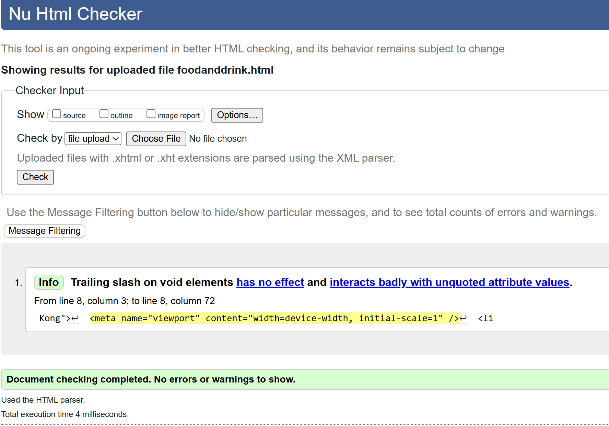
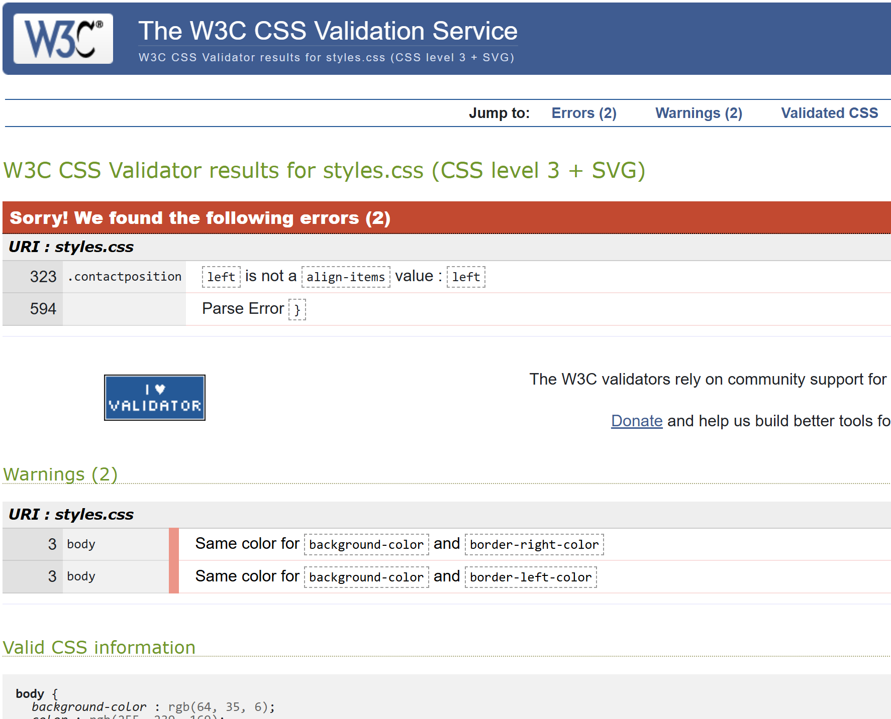
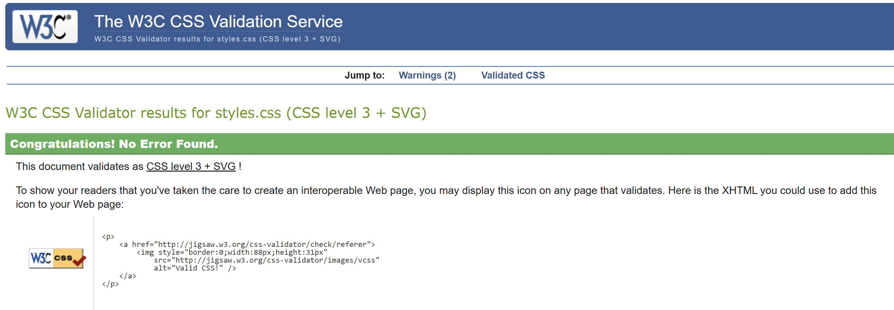
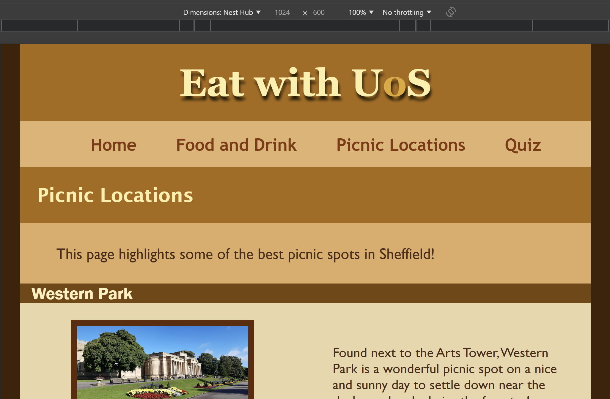
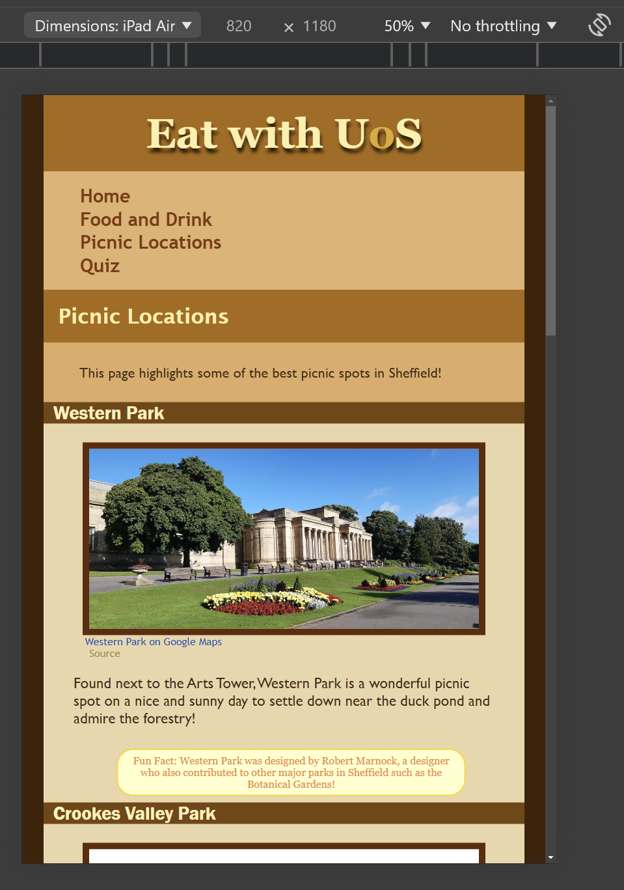
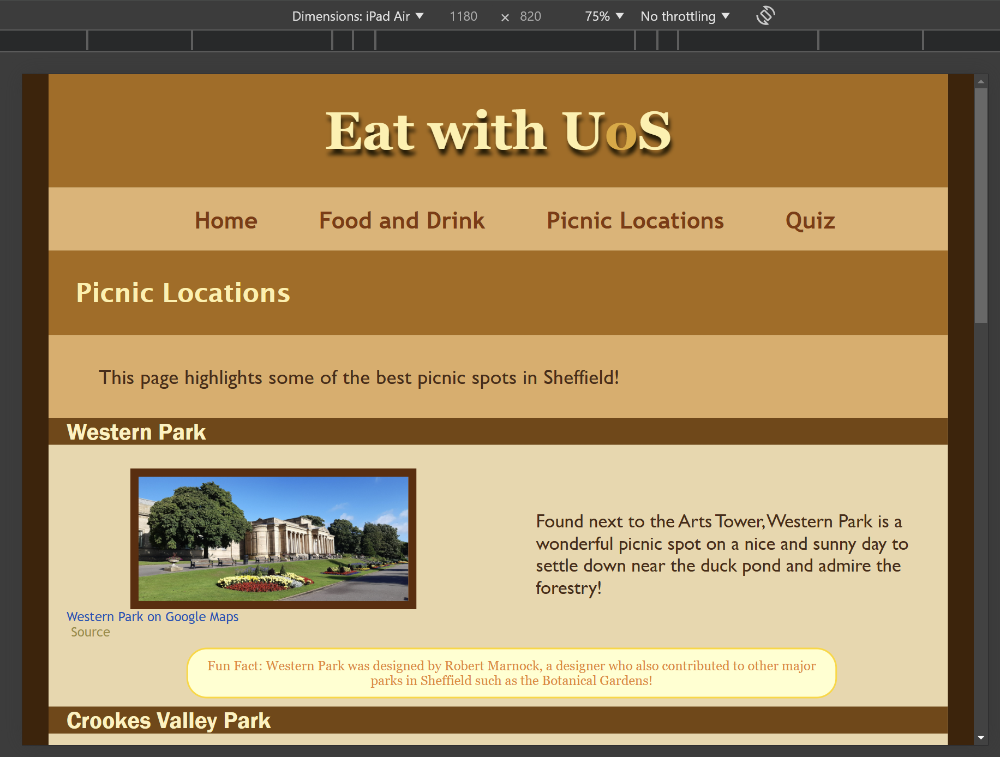
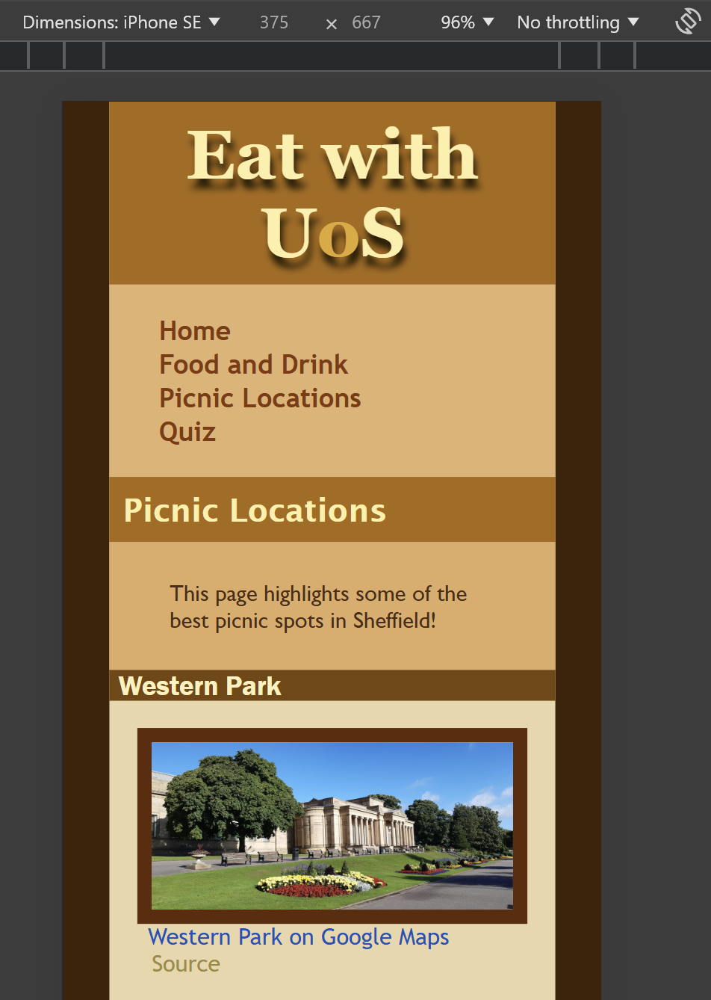
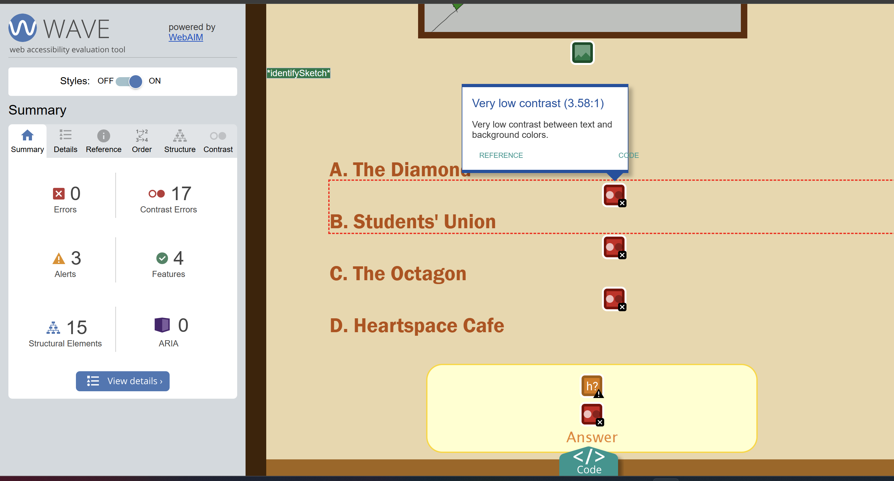
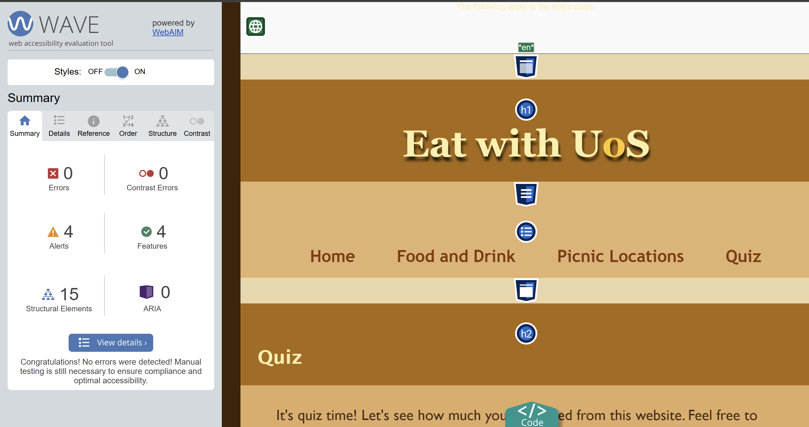

Testing
Optimisation
To optimise my page, I ensured to use only jpg and png image files stored in the same space as my HTML files so that images would be easy to access. Depending on the size of the screen, I also scaled down images, limiting their width, so it wouldn't consume the screen.
Debugging
In order to validate my HTML and CSS, I used online validator tools where I could upload my files and check the code was coherent to be a HTML and CSS file.
HTML
For HTML, I used the W3C HTML validator.
https://validator.w3.org/

Using the validator, it showed me all the errors that I made during development, so I could change any mistakes. It made me realise that I shouldn't use IDs multiple times, and instead assign them to be classes. The following image confirms my HTML validity after changes were made.

CSS
For CSS, I used the W3C CSS validator.
https://jigsaw.w3.org/css-validator/validator.html.en

With this, I was able to identify which line numbers had errors and fix them accordingly; in the case above, it made me realise I had redundant CSS in a class and that I had closed a style before I was meant to.
After correcting these mistakes, I achieved the following image, and am able to display the CSS validated icon on my webpage.


Browser Testing
In compliance with my breakpoints and tweakpoints, throughout the website's development I was checking the formatting on desktop, mobile and ipad/tablets. To do this, I used Google Chrome's DevTools and toggled the different devices to see what they would look like in the same dimensions as the devices.
Desktop:
Tablet:
Tablet horizontal:
Mobile view:
Seeing all the different views helped me to size everything, especially in media queries which would shift the navigation menu & images around depending on how wide the screen got. It made me realise I needed a different layout for the navigation menu on screens smaller than tablets, since the horizontal view would push words onto the next line.
In terms of browser testing, I utilised Chrome and Microsoft Edge during development, which both functioned similiarly, and for mobile I used Safari, all which didn't raise any issues.
Accessibility
To test out the accessibility of my site, I used the Web Accessibility Evaluation Tool as an extension to check for errors.
https://wave.webaim.org/extension/ In response to the low contrast errors, I was able to adjust my colour palettes accordingly:

The WAVE (web accessibility evaluation tool) was useful in identifying the contrast errors, and confirms that it would be usable to those who may have disabilities or use a screen-reader.